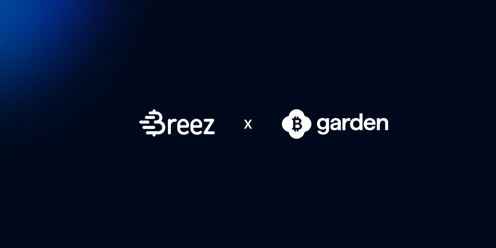

Garden is "the fastest and most cost-efficient way to move native bitcoin between chains without giving up custody." Whether USDT, Solana, Ethereum, Litecoin, or any of several more, Garden moves bitcoin between chains easily, securely, and economically.
And their users move sizable quantities. Over the course of nearly 80,000 swaps, Garden users have moved over 30,000 BTC, which amounts to roughly $2.2 billion USD.
In their own words, "Garden's mission is to be the standard for on-chain bitcoin rails," and they were well on their way.
Bitcoin is at the core of Garden's mission. They'd already cracked trustless cross-chain swaps at scale, but there was no "real-life, payments-grade" way to transfer bitcoin, at least not without accepting an unpalatable tradeoff.
Taking custody of users' funds violates Garden's commitment to Bitcoin, and it induces massive regulatory costs. Wrapping bitcoin adds technical complexity and doesn't solve the basic problem of how to make bitcoin spendable. Accessing Lightning directly means that both developers and users would have to navigate the complexities of channel management, liquidity requirements, connectivity, and so on.
Swaps were solved. "Bitcoin's payments layer" remained out of reach.
"Garden risked being the rails that reached every chain except Bitcoin's payment layer. For a protocol built around Bitcoin, that wasn't acceptable."
Jaz Gulati, Co-founder — Garden
The Breez SDK was the single step Garden needed to overcome the central challenge of bitcoin: how to enable instant, final, economical, non-custodial transfers at scale. Bitcoin is no longer the weak spot of the bitcoin bridge. In fact, the Breez SDK is letting Garden capitalize both on their growing point-of-sale partnerships and on the now decisive advantage over fiat remittances.
The advantages are clear.
For users:
"With the Breez SDK, adopting day-to-day bitcoin payments has never been easier."
Jaz Gulati, Co-founder — Garden
For developers:
For growth:
To the extent that growth is simply a matter of eliminating obstacles, the Breez SDK has given Garden the room to flourish. Garden's central challenge of how to achieve "real-life, payments-grade" bitcoin transfers is now solved, and the opportunities are nearly limitless: remittances, investments, staking, retail payments, and more are now within their grasp.
Rooted in the Breez SDK, it's time for Garden to grow.
Join Garden and 75+ apps adding instant, non-custodial bitcoin with the Breez SDK.